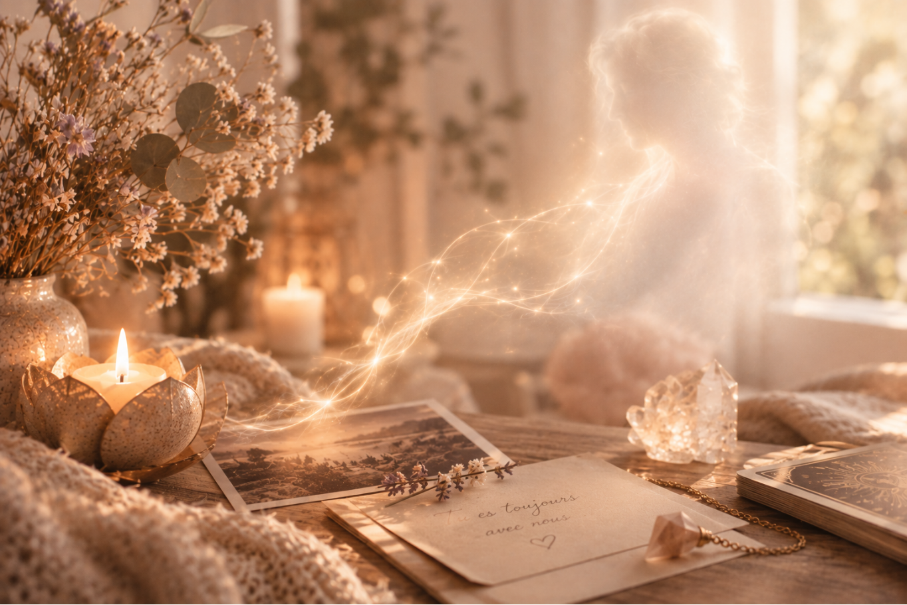
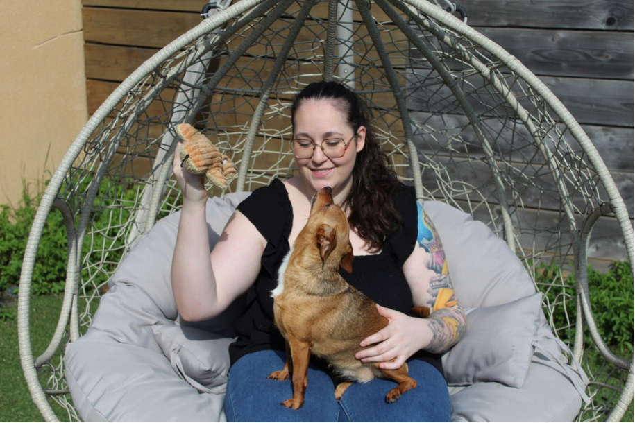

Connexion & Écoute
Communication Animale
Permettre une meilleure compréhension entre vous et votre animal dans un échange guidé par la bienveillance.
Découvrir le serviceDes accompagnements intuitifs et personnalisés à distance
Permettre une meilleure compréhension entre vous et votre animal dans un échange guidé par la bienveillance.
Découvrir le serviceUn espace de connexion pour accueillir les ressentis et messages de votre enfant, même avant les mots.
Découvrir le service
Offrir un temps de connexion, d'écoute et de douceur avec un être cher qui vous manque.
Découvrir le service
Une parenthèse de douceur pour libérer les tensions et retrouver une énergie plus apaisée.
Découvrir le service
Un éclairage bienveillant pour vous guider avec douceur dans les périodes de questionnement.
Découvrir le service
« Les animaux nous offrent ce que le cœur humain cherche parfois à retrouver. »
Avec respect, douceur et amour du vivant,
— Marine
Toutes mes pratiques reposent sur mes intuitions, mes ressentis et mes perceptions. Elles ne constituent ni des vérités absolues, ni des garanties de résultat, et chacun reste libre d’accueillir les éléments transmis selon son propre discernement.
Depuis toujours, je suis profondément sensible aux liens qui nous unissent aux autres, à nos émotions et à tout ce qui peut parfois se ressentir au-delà des mots.
J’ai créé Onystic Lumière avec l’envie profonde d’offrir un espace d’écoute, de connexion et de compréhension, où chacun peut prendre le temps de se reconnecter à soi et aux êtres qui occupent une place importante dans sa vie.
Après une formation de 9 mois en communication animale et soins énergétiques holistiques, j’ai choisi de mettre ma sensibilité, mes ressentis et mes connaissances au service d’un accompagnement doux, respectueux et bienveillant.
Aujourd’hui, je vous accompagne à travers différentes pratiques : communication intuitive avec les animaux, les bébés, les futurs bébés et les jeunes enfants, communication avec les défunts, soins énergétiques holistiques et cartomancie.
Chacune de ces pratiques est proposée comme un espace d’écoute et de connexion, permettant d’accueillir les ressentis, les émotions et les messages qui peuvent se présenter, toujours dans le respect de chacun et de son propre chemin.
Onystic Lumière est avant tout un lieu où l’on peut ralentir, écouter autrement et porter un regard différent sur soi, sur ses relations et sur les êtres qui nous entourent.
Mon souhait est de vous accompagner avec douceur et bienveillance, que vous cherchiez à mieux comprendre votre compagnon, à créer une connexion différente avec votre enfant, à traverser un deuil, à retrouver davantage d’équilibre grâce aux soins énergétiques ou simplement à vous offrir un moment de réflexion à travers les cartes.
Vos retours sont précieux et témoignent des belles transformations vécues.
« Retrouver des réponses claires et bienveillantes pour vous guider. »
La communication intuitive est une approche qui permet d'entrer en connexion avec les ressentis, les émotions et les messages d'un être, au-delà de la communication verbale.
Je propose des communications intuitives avec les animaux, les enfants et les défunts, dans une démarche d'écoute, de bienveillance et de respect.
Avant la séance, vous me transmettez les informations nécessaires ainsi que vos questions ou intentions.
Je me mets ensuite à l'écoute de ce qui se présente à moi : ressentis, émotions, images, sensations ou messages. La communication vous est ensuite restituée de manière claire et fidèle à ce qui a été perçu.
Chaque communication est unique et se déroule dans le respect de la personne ou de l'être concerné.
Oui. Les communications intuitives peuvent être réalisées entièrement à distance. La distance géographique n'est pas un obstacle à ma pratique.
Vous n'avez donc pas besoin de vous déplacer ni d'être présent(e) pendant la séance.
Le soin commence par un échange afin de comprendre votre demande et vos besoins du moment.
Je réalise ensuite le soin énergétique à distance, dans une approche globale, en travaillant notamment sur la circulation et l'équilibre énergétique. À la fin du soin, je vous transmets mes ressentis ainsi que les éléments importants perçus pendant la séance, sous forme d'un PDF personnalisé.
Pour les animaux, le soin énergétique est réalisé uniquement à la suite d'une communication animale, car le soin est effectué en effet miroir avec leur(s) humain(s).
Un soin énergétique est avant tout un moment d'écoute, de détente et de reconnexion à soi. Il peut accompagner différentes périodes de vie, lorsque l'on ressent un besoin d'apaisement, de recentrage ou de retrouver un meilleur équilibre intérieur.
Note : Les soins énergétiques ne remplacent pas un suivi médical ou vétérinaire.
La séance commence par un échange autour de votre situation et de ce que vous souhaitez éclairer. Les cartes permettent d'explorer une situation, vos ressentis, les différentes possibilités et les énergies du moment.
La cartomancie n'a pas pour objectif de décider à votre place, mais de vous offrir un autre regard et des pistes de réflexion.
Chaque prestation répond à une intention différente La communication intuitive permet de chercher à comprendre et de recevoir des messages d’un animal, d’un enfant ou d’un défunt. Le soin énergétique s’adresse davantage à un besoin de détente, de recentrage et d’harmonisation énergétique, pour les humains comme pour les animaux. La cartomancie permet d’apporter un éclairage sur une situation, une question ou un choix, et d’explorer différentes possibilités. Si vous hésitez entre plusieurs prestations, vous pouvez également me contacter afin que nous puissions déterminer ensemble celle qui correspond le mieux à votre demande.
Me contacterPrenons un moment pour échanger ♡
Une question, un besoin d'accompagnement ou simplement l'envie d'échanger ?
Je suis à votre écoute et je vous répondrai avec bienveillance dans les plus brefs délais.